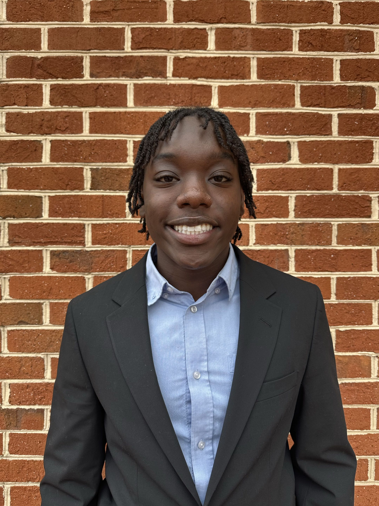
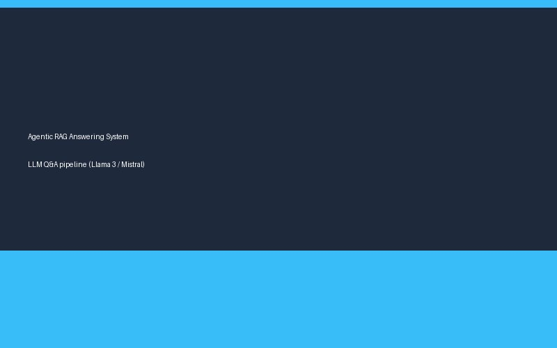
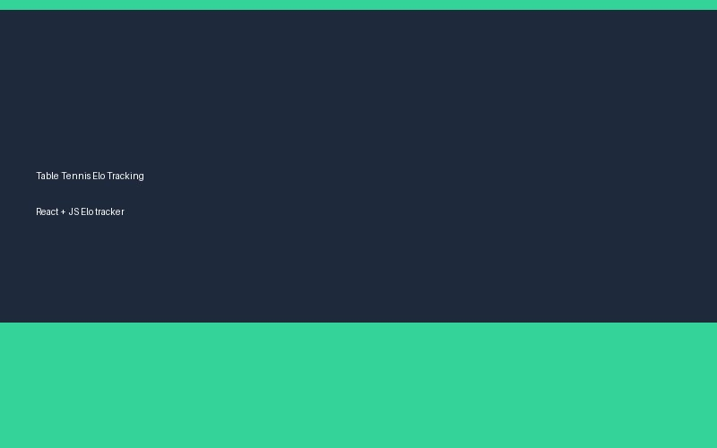
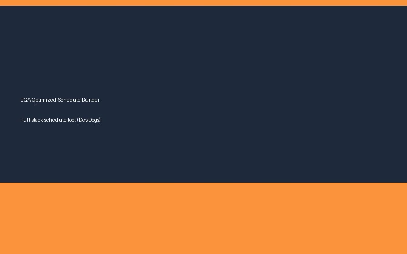

4610 Wigley Estates Road, GA 30066 • (404) 547-0419 • ewn10245@uga.edu
Aspiring software engineer at the University of Georgia, passionate about full-stack development, AI-driven tools, and building software that makes everyday workflows easier.


